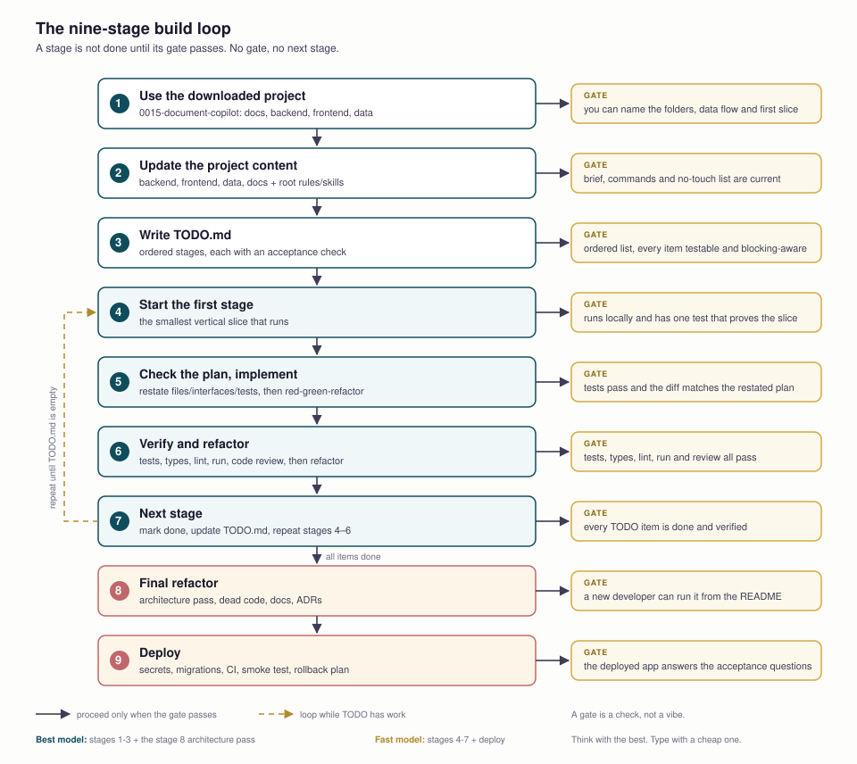

AI Coding: The Tools, the Models, and the Loop That Ships
The leverage is not the model. It is the loop around it: a repository the agent can read, instructions it must follow, skills that encode your process, and a checklist that turns a client brief into small verified stages. Tools and models are interchangeable; the loop is what compounds.
Part 1 — The tools, by the job they do
These are not competitors in one category. A multiplexer runs agents; an agent edits code; an IDE puts both in a window. Mixing them is normal.
| tool | what it is | reach for it when |
|---|---|---|
| herdr | A terminal multiplexer built for coding agents: persistent panes, a sidebar with working / blocked / idle state, SSH, and a CLI agents can drive. | You run three or more agents and need to see which one is waiting on you. |
Pi (pi) | A deliberately minimal terminal agent: four default tools, a small prompt, TypeScript extensions, skills and MCP. It has no built-in permission prompts; run it in a container or trusted checkout. | You want a small harness you can extend and understand. |
Oh My Pi (omp) | A batteries-included fork of Pi: LSP, debugger (DAP), subagents, browser, 60+ providers, parallel worktrees. Its default approval mode is effectively yolo; configure it before client work. | You want IDE-class code intelligence in a terminal. |
| Codex CLI | OpenAI's Rust terminal agent. OS-level sandbox, network off by default, approval policy, codex exec for headless runs. Works with ChatGPT plans or an API key. | You want safe defaults and parallel, sandboxed tasks. |
| OpenCode | MIT-licensed, provider-agnostic agent (75+ providers, local models), TUI + desktop + IDE + server. It is a harness, not a model. | You want model freedom, local models, or a fixed harness to compare models. |
| Claude Code | Anthropic's agent: CLI, desktop, IDE, web, mobile. Deepest agent tooling — subagents, hooks, skills, plugins, checkpoints/rewind, permission modes. | Long, multi-file refactors and supervised autonomous work. |
| Cursor | An AI-native editor (VS Code fork): Tab completion, visual diffs, an Agents window, cloud agents. | You want to stay in an editor and review diffs visually. |
| VS Code | The general-purpose editor. Copilot and agent extensions bring chat, edits, and MCP; Codex and Claude Code both run inside it. | You want one editor with extensions and no vendor lock. |
Install commands (check the current docs; these move):
# herdr - multiplexer
curl -fsSL https://herdr.dev/install.sh | sh
# Windows: irm https://herdr.dev/install.ps1 | iex
# Pi - minimal agent
npm install -g @earendil-works/pi-coding-agent
# Oh My Pi - batteries included
curl -fsSL https://omp.sh/install | sh
# Codex CLI
npm install -g @openai/codex
# OpenCode
curl -fsSL https://opencode.ai/install | bash
# Claude Code
curl -fsSL https://claude.ai/install.sh | bashThe honest split. Pi and Oh My Pi are the minimal-versus-batteries pair: Pi gives you four tools and expects you to add the rest; OMP ships LSP, debugger, subagents and a browser, and you should turn its approvals on. Codex and Claude Code are the vendor agents: Codex optimizes for sandboxed safety, Claude Code for long-horizon reasoning and tooling depth. OpenCode is the neutral harness. herdr is the operations layer above all of them — it does not edit code.
Part 2 — IDE: Cursor or VS Code?
| Cursor | VS Code | |
|---|---|---|
| model | AI-native editor, VS Code fork | general editor + extensions |
| strength | Tab completion, inline diffs, Agents window, cloud agents | one editor for every language; Copilot, Codex, Claude Code, MCP |
| tradeoff | another subscription and a fork | agent experience is extension-dependent |
| pick it if | you review AI edits visually all day | you want portability and already live in VS Code |
They are not exclusive. Many teams run a terminal agent for the heavy work and an editor for the diff. If you use Cursor, you can still install Codex or Claude Code as an extension; if you use VS Code, the same agents plug in. The lesson is workflow, not allegiance.
Part 3 — Models: the families that matter
First correction: OpenCode is a harness, not a model. It appears in the list because it is often paired with the models below. Second: “daobao” is ByteDance's Doubao; “Bailian” is Alibaba Cloud's Model Studio platform, home of Qwen.
| family | maker | what it is good at | typical route |
|---|---|---|---|
| Codex / GPT-Codex | OpenAI | deep coding, tool use, sandboxed parallel work | Codex CLI, ChatGPT plans, API |
| Claude Opus / Sonnet | Anthropic | long-horizon refactors, careful multi-file changes | Claude Code, Claude plans, API |
| DeepSeek V4.x | DeepSeek | strong code per dollar; Flash for volume, Pro for hard tasks | API, OpenAI-compatible |
| Kimi K2.x / K3 | Moonshot | agentic coding, long context, coding plans | Kimi Code, Anthropic/OpenAI-compatible |
| MiMo V2.x | Xiaomi | reasoning, 1M context, low cost | API, coding tools |
| MiniMax M2.x / M3 | MiniMax | agentic coding, 1M context, competitive pricing | API, coding plans |
| Doubao Seed | ByteDance | coding and general models on Volcengine; Seed-Code / Evolving | Volcengine Ark, coding plan |
| Qwen / Bailian | Alibaba | Qwen3-Coder, Qwen3.5/3.7/3.8; strong tool use, vision on Plus | Model Studio (Bailian), Qwen Code |
| GLM | Zhipu | popular coding-plan alternative; 1M context on recent models | Z.ai, compatible APIs |
How to choose: start from the constraint, not the leaderboard.
- Hard refactor / architecture: Claude Opus or a top Codex model, with a plan and review step.
- High-volume edits and tests: DeepSeek Flash, Qwen Flash, Doubao Lite, MiMo Flash — cheap enough to run many loops.
- Long context / many files: Kimi, MiMo, MiniMax, Qwen Plus — check the actual context window, not the marketing name.
- Local / private: Qwen or DeepSeek weights via Ollama or vLLM (lesson 14).
- Model freedom: OpenCode, Pi or OMP with your own key.
Coding plans are not API keys for your backend. Qwen/Bailian, Kimi, MiniMax, Doubao and GLM sell interactive coding subscriptions with dedicated keys, base URLs and quotas (5-hour, weekly, monthly). Alibaba explicitly restricts its plan to interactive coding tools and forbids automated scripts or application backends. Keep the plan key for the agent, and a normal pay-as-you-go key for production. Mixing the two is how a bill or a suspension happens.
Model features: check the capability, not just the logo
A model family is not a feature list. The same provider ships chat-only, vision, reasoning, and audio models under different tags, and a coding plan often exposes only a subset. Before you choose, write down the features the product actually needs and verify each one on the exact model tag you will call.
| feature | what it lets you build | where to look first |
|---|---|---|
| Chat / instruction following | the base loop: messages in, answer out | all nine families |
| Reasoning / thinking budget | hard refactors, multi-step planning; often slower and costlier | Claude extended thinking, OpenAI reasoning models, DeepSeek V4, Kimi K3, Qwen, GLM, MiniMax, MiMo |
| Tool calling | agents, MCP clients, API orchestration | most current chat models; verify function-calling support on the exact tag |
| Structured output | Pydantic-validated JSON, extraction, routing | OpenAI strict schema, Anthropic tool schema, Qwen, DeepSeek; others via function calling |
| Vision / image input | screenshots, charts, scanned documents | OpenAI, Claude, Qwen-VL/Plus, Kimi K2.5/K3, MiMo, MiniMax, Doubao, GLM multimodal |
| Image generation | illustrations, product shots, UI assets | OpenAI image models, Qwen-Image/Wan, Doubao Seedream, MiniMax image; usually a separate endpoint |
| TTS / speech output | voice assistants, narration, accessibility | OpenAI TTS, Qwen TTS/CosyVoice, MiniMax Speech, Doubao TTS, MiMo TTS |
| ASR / transcription | meeting notes, voice input, call analysis | OpenAI Whisper/transcribe, Qwen ASR, MiniMax, Doubao, MiMo ASR |
| Embeddings | RAG, semantic search, clustering | Qwen text-embedding-v4, OpenAI embeddings, Cohere/Voyage; DeepSeek has no embeddings endpoint (lesson 7) |
| Reranking | a second retrieval pass that reads query + chunk together | Qwen gte-rerank, Cohere Rerank, Jina; or a local cross-encoder (lesson 7) |
| Long context | whole repos, long transcripts, many documents | Claude, Kimi, MiMo, MiniMax, Qwen Plus/Max, Doubao: 1M-class on recent tags |
| Streaming / realtime | token streaming, live voice, low-latency chat | most chat APIs stream; realtime speech-to-speech is a separate product (OpenAI Realtime, Qwen-Omni) |
| Batch / caching | cheaper offline jobs; repeated system prompts | OpenAI Batch, Anthropic prompt caching, DeepSeek context caching, Qwen context cache |
Read the feature matrix as a shopping list, not a scorecard. A support bot needs chat + tools + structured output + embeddings; a voice agent needs ASR + chat + TTS; a coding agent needs tool calling and long context but not image generation. One “omni” model rarely wins every row — and a coding plan may not expose the TTS or embedding endpoint at all.
Part 4 — Agent skills: process as a file
An agent skill is a folder with a SKILL.md plus optional scripts, references and assets. The file has a name and a trigger description; the agent loads it when the task matches, instead of carrying every instruction in every prompt. It is procedural memory — how your team does a thing — not a tool and not a model feature.
| mechanism | what it carries | when it loads |
|---|---|---|
| AGENTS.md / CLAUDE.md | repo facts and standing rules | always, at session start |
| agent skill | a repeatable procedure, with checks and scripts | on demand, when the task matches |
| MCP server | a capability: tools, resources, prompts across a protocol | when the client connects and the model calls it |
Why they matter: an agent has no memory of your last project. Without a skill, every session re-derives your process from scratch, and quality depends on how well you prompt that day. A skill makes the process explicit, reviewable, versioned, and portable across Claude Code, Codex, OpenCode, Cursor, Pi and OMP. It is the difference between “the model wrote code” and “the model followed our definition of done.”
Install Matt Pocock's skill set
The set this course borrows from is mattpocock/skills, documented at aihero.dev/skills. It is small, composable, and model-agnostic. Install once per project:
npx skills@latest add mattpocock/skills
# choose your agent when prompted, e.g.:
npx skills@latest add mattpocock/skills -a claude-code
# Claude Code plugin alternative
claude plugin install mattpocock-skills@claude-plugins-officialThen run /setup-matt-pocock-skills once per repo: it asks which issue tracker you use, which triage labels, and where docs live. The main flow is:
/grill-with-docs → /to-spec → /to-tickets → /implement → /code-review → /retro| skill | job | when |
|---|---|---|
grill-with-docs | Interviews you about a change, resolves the design tree, writes terms to GLOSSARY.md and hard decisions to ADRs. | Start of a change; the plan is still fuzzy. |
to-spec | Turns the settled conversation into a spec/PRD with user stories; no second interview. | After grilling, before tickets. |
to-tickets | Breaks the spec into vertical-slice tickets with blocking edges. | When the spec is agreed and you need a journey. |
tdd | Red-green-refactor: one failing test at a time, then the implementation. | Every code change; the quality loop. |
implement | Builds a spec or ticket, driving TDD at the agreed seams, closing with code review. | Execution stage. |
code-review | Two-axis review of the diff: repo standards and the originating spec. | Before every commit/PR. |
improve-codebase-architecture | Scans for shallow modules and coupling; presents deepening candidates as a report. | Weekly, or after a feature burst. |
diagnosing-bugs | A gated loop: reproduce, minimise, hypothesise, instrument, fix, regression-test. | Hard bugs and performance regressions. |
triage | Moves issues through a state machine with labels; keeps the backlog honest. | When the ticket list outgrows the work. |
handoff | Compacts a session into a document another agent can continue from. | Before context runs out or switching agents. |
prototype | Builds a throwaway artifact to answer a design question. | Before committing to a UI or state model. |
wayfinder | Charts a multi-session effort as a map of decision tickets. | Too big for one session. |
retro | Suggests improvements to the agent's environment after a session. | End of a milestone. |
The meta-skills you named:
teach— a stateful teaching workspace: it reads a mission, plans lessons, writes HTML, and records what you learned. This course is built with it.find-skills— discovers and installs skills for a task, so you do not have to know the name in advance.skill-creator— authors or updates a skill: trigger description, steps, scripts, examples, and a test pass.
What makes a skill good: a narrow trigger (“use when reviewing a diff against a spec”), a checklist with a stop condition, the exact commands, one worked example, and a verification step. Keep it short enough to load and specific enough to change behaviour. Store it in the repo so the team shares it; do not put secrets in it. A skill that says “write good code” is a slogan; a skill that says “run these five checks and paste the output” is a process.
Part 5 — The codebase you will practise on
document-copilot is an internal AI chatbot for analysts: ask a corpus of documents in plain English, get sourced answers. It is copied into this course at assets/examples/0015-document-copilot/. The snapshot is a client brief and skeleton, not a finished app — there is no backend application code and no frontend package manifest yet, which is exactly what makes it a good workflow exercise.
0015-document-copilot/
├─ AGENTS.md repo-wide agent rules
├─ docs/client-brief.md what the client wants
├─ docs/architecture.md how the proposed system fits
├─ backend/AGENTS.md FastAPI conventions
├─ frontend/AGENTS.md React/Vite conventions
├─ data/download.py SEC EDGAR sample downloader (stdlib)
└─ docs/guides/ Supabase, backend, frontend setup| layer | choice |
|---|---|
| backend | Python + FastAPI |
| frontend | Vite + React + TypeScript |
| database | Supabase Postgres; users, chats, documents, chunks |
| retrieval | pgvector + Postgres full-text search |
| auth | Supabase Auth (email) |
| LLM + embeddings | OpenAI in the original brief (swap freely) |
Read in this order before writing code: AGENTS.md (agent rules) → docs/client-brief.md (what the client wants) → docs/architecture.md (how it fits) → backend/AGENTS.md and frontend/AGENTS.md (local conventions) → README.md (setup). All paths are inside the example folder. The repo already tells the agent how to behave; your first job is to update that, not to prompt from a blank page.
Part 6 — The workflow: nine stages, with gates
The loop is deliberately boring. Each stage has a deliverable and an exit gate; you do not start the next until the gate passes. The first two stages operate on the local snapshot: use what you downloaded, then update its content before asking for code.

TODO.md is empty.| stage | model | what you do | exit gate |
|---|---|---|---|
| 1. Use the downloaded project | Best research | Open assets/examples/0015-document-copilot/ (or your clone) and read AGENTS.md, README.md, docs/client-brief.md, docs/architecture.md, then inspect backend/, frontend/ and data/. List what is missing. | You can name the folders, the data flow, and the first vertical slice with its acceptance check. |
| 2. Update the project content | Best plan | Update what you just inspected: backend/ (AGENTS, .env.example, pyproject.toml), frontend/ (AGENTS, package manifest, .env.example), data/ (download parameters, corpus notes), docs/ (brief, architecture, setup guides), plus root AGENTS.md / README.md / GLOSSARY.md / TODO.md; install skills, choose the model, set permissions. | The brief, commands, constraints and no-touch list are current — in the files the agent will actually read. |
3. Write TODO.md | Best plan | Ask the agent for a build order and a checklist. Paste the prompt below. | The list is ordered, each item has an acceptance check. |
| 4. Start the first stage | Fast build | Take the smallest vertical slice: backend skeleton, health check, DB models, one endpoint. | It runs locally; one test proves it. |
| 5. Check the plan and implement | Fast build | Before coding, restate the stage's files, interfaces and tests. Then implement with /tdd. | Tests pass; the diff matches the plan; no drive-by edits. |
| 6. Verify and refactor | Fast build | Run tests, typecheck, lint, the app. Run /code-review. Refactor only what the review names. | All checks pass; the review has no blocking finding. |
| 7. Next stage | Fast build | Mark the item done, update TODO.md, repeat stages 4–6. | Every checklist item is done and verified. |
| 8. Final refactor | Best plan, Fast edits | /improve-codebase-architecture; remove dead code; update README and ADRs; run the whole suite. | A new developer can run it from the README. |
| 9. Deploy | Fast ops | Secrets, migrations, CI, smoke test, logs/traces, rollback plan. | The deployed app answers the five acceptance questions. |
Match the model to the mode
There are two kinds of work in this loop, and they want opposite things from a model.
Research and plan mode is low volume, one shot, high leverage. You read a repo, map the data flow, choose the slice order, name the interfaces. A few thousand tokens decide every file the agent will touch for the next two days. This is where the frontier model earns its price: better reading, better decomposition, fewer invented assumptions. Run it read-only — ask for the plan, not the code. Nothing should be edited in this mode, because a write is a decision and the decision is what you are buying.
Implementation is high volume, many small steps, cheap to verify. Write a test, make it pass, refactor, run the checks. Each step has a gate that catches a mistake in seconds, so the marginal value of a smarter model is small and its marginal cost is not. A fast model with a tight loop beats an expensive model with a loose one. Use DeepSeek Flash, Qwen Flash, Doubao Lite or MiMo Flash for stages 4–7; save the frontier model for the plan and the review.
The hand-off is the plan. A cheap model can execute a good plan; it cannot invent one. So before you switch models, write it down: the ordered TODO.md with acceptance checks, the files and interfaces for the current slice, the exact commands, and the no-touch list. Without that artifact the cheap model re-derives the architecture from scratch, and you pay for two planners — one expensive, one wrong.
Escalate on repeat failure, not on difficulty. If a slice fails its gate twice, do not run a third fast loop. Move that slice back to the planner model, in plan mode, and ask for a smaller step or a named fix; then hand the corrected plan down again. Two failed loops usually mean the plan was wrong, and a third cheap attempt will not discover that.
Never invert the split. A cheap model designing the architecture while a frontier model types the CRUD is the most expensive way to build software: you pay frontier prices to discover that the plan was wrong, and you throw away the reasoning that would have avoided it. Cheap thinking is not a saving; it is a rewrite.
One exception worth the tokens: the reviewer should be at least as strong as the implementer when the change is subtle — concurrency, auth, migrations, money, anything with a data-loss path. A cheap model reviewing a cheap model's security change is agreement, not review.
The TODO prompt
Paste this after stage 2. It is the user's prompt, cleaned for grammar; keep the order of the questions.
Help me set up a checklist in TODO.md. What is the most logical way to set up
this project? Do we start with the backend or the frontend? Give me a checklist
I can work towards, in order, to implement the entire architecture and satisfy
the client brief. For each item, name the files or modules it touches, the
acceptance check, and what it blocks.The extra sentence is the important one. A checklist without acceptance checks becomes a wish list; a checklist with them becomes the contract for every stage.
What “done” means per stage
- Tests: at least one test that would fail if the feature were removed.
- Types and lint: the repo's commands, not a global installation.
- Run: the actual app or endpoint, not only unit tests.
- Review: standards + spec, with the diff in front of you.
- Docs: the README or an ADR explains any non-obvious decision.
Git worktrees: the unit of parallel agent work
One checkout, one agent. Two agents in the same working tree will overwrite each other's files, race on git status, fight over the dev server and the test database, and produce a diff neither of them can explain. The fix is not a better prompt; it is filesystem isolation.
A git worktree is a second working directory attached to the same repository. It shares the object database and history (no full clone), but has its own checkout, index, branch and HEAD. That is exactly the boundary an agent needs: a private filesystem and branch, with the team's real history underneath.
document-copilot/ main worktree, branch main
├─ .git/ shared object database
├─ ../doc-copilot-api/ worktree, branch feat/api
├─ ../doc-copilot-ui/ worktree, branch feat/ui
└─ ../doc-copilot-tests/ worktree, branch feat/tests# one task, one branch, one worktree
git worktree add ../doc-copilot-api -b feat/backend-skeleton
# run the agent there
cd ../doc-copilot-api
# ... agent edits, runs tests, commits ...
# review from the main checkout
cd ../document-copilot
git diff main..feat/backend-skeleton
git worktree list
# merge after review, then clean up
git merge feat/backend-skeleton
git worktree remove ../doc-copilot-api
git branch -d feat/backend-skeletonThree rules make it work. One worktree per agent, per branch, per vertical slice — do not let two agents share one; they will still collide. Install dependencies per worktree (uv sync, pnpm install) and give each its own ports and database/schema; sharing a dev server or a local Postgres is the next race. Merge only after tests and review — a worktree isolates edits, not semantic conflicts.
| without worktrees | with worktrees |
|---|---|
| agents overwrite each other's files | each agent owns a checkout |
one dirty git status | one branch and diff per task |
| tests and dev servers fight over ports/state | independent runs, separate ports/DBs |
| reviewing a mixed diff | reviewing one branch against main |
| a failed experiment pollutes the main tree | delete the worktree; main is untouched |
Where the tools fit: herdr shows which agent is blocked, but it does not isolate files — worktrees do. Some agents create worktrees for you (Claude Code's background sessions, Oh My Pi's parallel subagents, Cursor's cloud agents); verify before trusting the label. The workflow is the same: main stays clean, each ticket gets a worktree, and the reviewer sees one branch. A worktree is cheap; a corrupted checkout is not.
When not to bother: one agent on one task. Worktrees add setup (dependencies, ports, DB) and cleanup; use them when the tasks are genuinely independent, not to look busy.
Part 7 — The day-one checklist
| decision | default |
|---|---|
| Agent | Claude Code or Codex for depth/safety; OpenCode for model freedom; Pi/OMP if you want to own the harness |
| Editor | VS Code if you want portability; Cursor if you review AI diffs visually all day |
| Model | a frontier model for architecture; a cheap model (DeepSeek/Qwen/Doubao/MiMo) for volume |
| Skills | grill-with-docs, to-spec, to-tickets, tdd, implement, code-review, improve-codebase-architecture |
| Context | AGENTS.md + GLOSSARY.md + TODO.md in the repo, not in a chat |
| Safety | sandbox on, approvals on, secrets out of the repo, worktree per parallel agent |
Do not: let two agents share a checkout; let a coding-plan key power a backend; start a feature before the spec and the tests exist; trust a “done” without running the app; paste client secrets into a prompt.
Check yourself
Primary sources for this lesson
Skills: AI Skills for Real Engineers and the mattpocock/skills repository for the full set and install commands; Anthropic's skills documentation for the format, frontmatter and loading model.
Tools: herdr, Oh My Pi, OMP repository, Pi, OpenCode, Codex, Claude Code, Cursor, VS Code.
Models: DeepSeek, Moonshot Kimi, MiniMax, Volcengine Ark (Doubao), Alibaba Model Studio (Bailian/Qwen), Z.AI GLM.
Codebase: document-copilot — read AGENTS.md, docs/client-brief.md and docs/architecture.md before the first prompt.
What's next
Lesson 16 takes the codebase to delivery: Jenkins builds and pushes, Git declares the desired state, and Argo CD reconciles the cluster. Lesson 17 then applies this workflow to the capstone — a Supabase RAG product built in gated phases, with the unresolved verification work left visible. The strategy choices continue in the skill map.